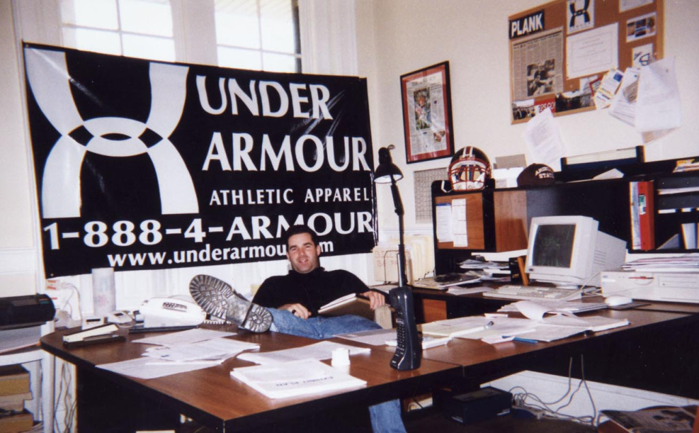
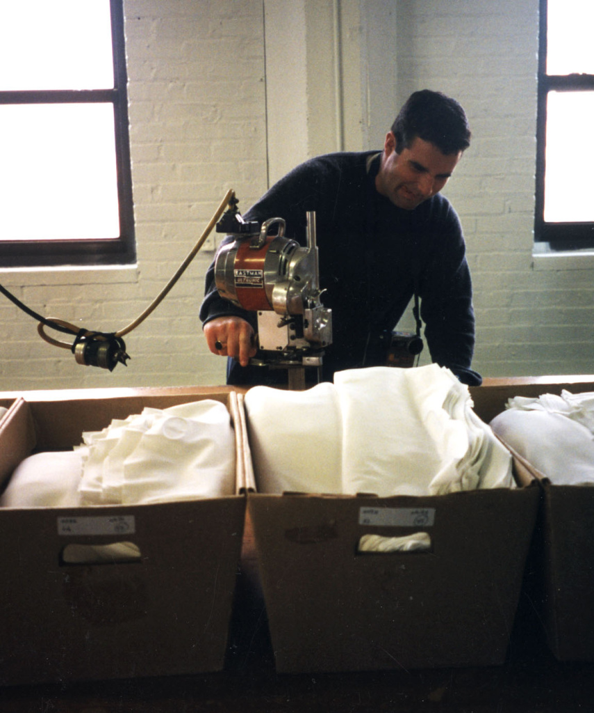
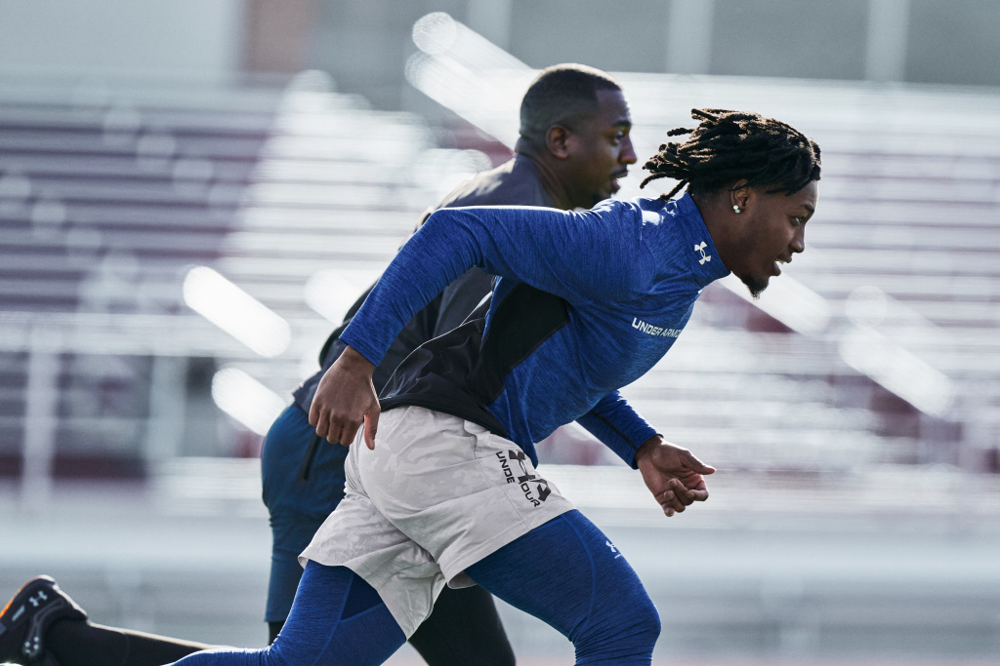
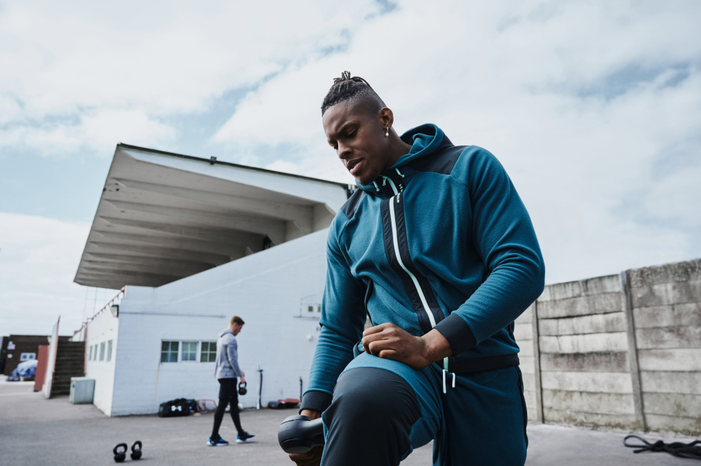

Історія бренду Under Armour
На сьогоднішній день компанія Under Armour є одним із найбільших виробників спортивного одягу. На ринку Північної Америки Under Armour поступається лише легендарному Nike.
Історія розвитку бренду тісно пов'язана з його засновником Кевіном Планком. Це історія про те, як молода та амбітна людина змогла повністю реалізувати свій талант підприємця. Ще підлітком Кевін заробив більше 500 доларів на продажі етнічних браслетів, які привіз його старший брат з подорожі. Ще до свого 18-річчя Кевін успішно торгував футболками на різних концертах, продаючи їх дешевше за конкурентів, але все ж таки з величезною вигодою для себе. В університеті Кевін Планк купив цілу вантажівку троянд і підмовив своїх приятелів із футбольної команди допомогти у перепродажі. У результаті 14 лютого 1996 року в день усіх закоханих Кевін та його команда примудрилися заробити 17 000 доларів. Ці кошти стали першим капіталом майбутнього бізнесу Кевіна.

Кевін Планк обмірковував безліч різних бізнес-ідей. Якось Кевіну прийшла думка про те, як було б чудово, якби під час тренування не доводилося змінювати форму кілька разів. Ідея була в тому, щоб створити форму, здатну максимально швидко виводити вологу. Такі технології вже були доступні на той час, але застосовувалися переважно у виробництві взуття.
Як і личить усім історіям американського успіху, Кевін створив невелику лабораторію в гаражі своєї бабусі. Там він працював над створенням необхідного матеріалу. Кевін знайшов якісного підрядника, який відшив йому сім варіантів футболок із різних матеріалів та крою. Ці футболки протестували його партнери з футбольної команди і одна з моделей відповідала необхідним вимогам. Так з'явилася модель №0037 із технологією HeatGear®.

Протягом року Кевін ризикував усім спробувати поширити свою продукцію. Він пропонував свої футболки всім кому тільки можна, не відмовляв у запитах на нові варіанти одягу та вкладав усе, що в нього є у розвиток компанії. Брав кредити і йшов у мінус. Як ми знаємо успіх любить сміливих і успіх не змусив себе чекати. У 1997 році Кевін та його брат Колін зареєстрували торгову назву Under Armour і створили логотип, який існує й досі.
У 1998 році компанія представила тканини ColdGear® та AllSeasonGear®, які дозволяли спортсмену залишатися сухим у будь-яку погоду, а також розширити лінійку одягу, що виробляється. Для популяризації свого нового бренду Кевін відправив зразки свого одягу відомим футболістам із проханням спробувати та дати свої коментарі. Це спрацювало і фотографія популярного футболіста Джеффа Джорджа, одягненого в Under Armour, з'явилася у відомому американському журналі. Після цієї події компанія отримала багато замовлень. Через рік одяг від Кевіна Планка з'явився у фільмах “Дублери” та “Кожної неділі”. Under Armour стали офіційним екіпірувальником олімпійської збірної США. Контракти від NBA, NHL та інших спортивних асоціацій не змусили на себе чекати.

Довгий час Under Armour відшивала одяг виключно для чоловіків, але 2003 року компанія випустила першу лінійку спортивного одягу для жінок UA Women. Одяг виявився вдалим і припала до вподоби жінкам Америки. 2006 року жіноча лінійка придбала своїх перших зірок. Гірськолижниця Ліндсі Вон стала представником Under Armour. Вона залишається вірною бренду і навіть має іменну лінійку спортивного одягу.
Почавши свою історію зі спроб замінити бавовну більш сприятливий матеріал для занять спортом, Under Armour вирішив повернутися до традиційного матеріалу. Компанія створила унікальний варіант бавовняної тканини, що висихала досить швидко і була придатна для занять спортом. Так з'явилася лінійка Under Armour Charged Cotton.
Заробивши собі добре ім'я на виробництві високоякісного спортивного одягу, Under Armour прийняли рішення про створення власного взуття. Конкуренція в даному сегменті вже була дуже високою, тому розробка власного взуття тривала понад 5 років. У 2006 році компанія представила футбольні бутси із серії Click-Clack®. У перший рік вони придбали понад 20% ринку футбольного взуття США. 2008 року з'явилися перші універсальні кросівки для різних видів тренувань.

У 2013 році компанія почала вбудовувати у своє екіпірування спеціальні датчики, що дозволяють спортсменам відстежувати свої показники через мобільні програми. Under Armour Armour39™ це програма, яка як особистий тренер допомагала спортсменам досягати максимальних результатів.
Бізнес Кевіна Планка розвивався просто блискавично, швидко вийшов за межі США та став представлений у більшості країн світу.
До 2017 року оборот компанії наблизився до 2 млрд. доларів і продовжує зростати.
Стрімкість успішного розвитку Under Armour дивує багатьох фахівців досі. Унікальність бренду в тому, що Кевін Планк та його команда насамперед були націлені на створення інноваційного продукту та впровадження передових технологій, а вже після цього приділяли увагу рекламі та залученню іменитих спортсменів.
На сьогоднішній день компанія Under Armour є одним із передових та масових виробників екіпіровки для безлічі видів спорту. На SPORTPOINT.RU ви знайдете найкраще прогресивне екіпірування Under Armour!